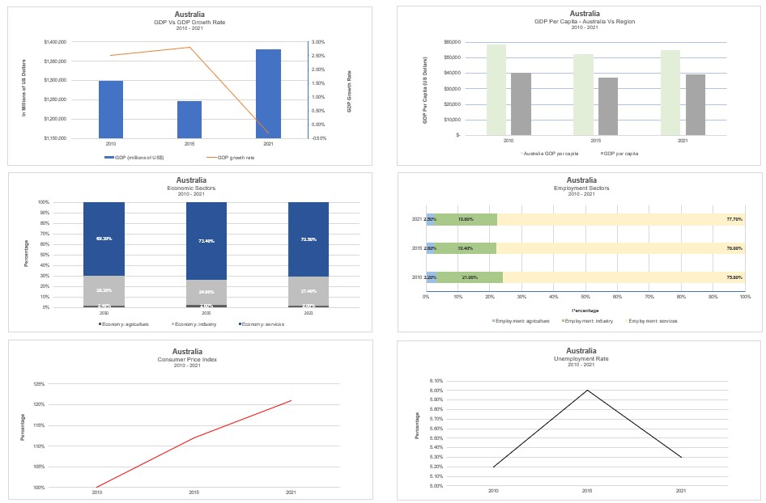
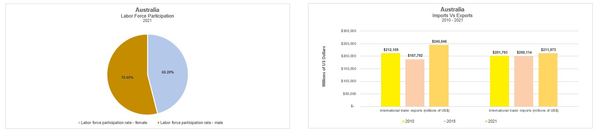
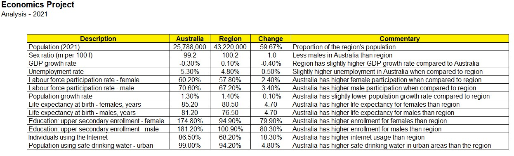

Data Analysis
As a skilled data analyst, I possess a range of essential capabilities that enable me to derive valuable insights and make data-driven decisions. Within the realm of data analysis, some key skills and qualities I exemplify include:
- Excel Proficiency: Highly skilled in Microsoft Excel, utilizing its advanced functionalities to organize, manipulate, and analyze data efficiently.
- Power BI Expertise: A strong command of Microsoft Power BI, creating interactive and visually compelling dashboards to present complex data in a clear and concise manner.
- Precision and Accuracy: Attention to detail ensures that data analysis is conducted with precision, leading to reliable and accurate results.
- Scientific Approach: Background in scientific analysis empowers me to apply rigorous methodologies when exploring data, ensuring robust and unbiased conclusions.
- Data Cleaning and Transformation: Proficient in data cleaning and transformation techniques, ensuring that data is prepared for analysis in the most effective way.
- Statistical Analysis: A strong foundation in statistical concepts and techniques, enabling me to draw meaningful insights from data and identify trends.
- Data Visualization: The ability to employ various data visualization tools and techniques, enabling me to communicate complex findings in a clear and accessible manner.
- SQL Querying: Experience in using SQL to retrieve, manipulate, and analyze data from databases efficiently.
- Multiple databases: I have strong expertise in working with various relational databases, including SQL, PostgreSQL, MySQL, MS SQL Server, and other relational systems. Additionally, I am well-versed in non-relational databases like Elasticsearch, KeyDB, and Redis.
- Communication: Effectively communicating data findings to both technical and non-technical stakeholders, bridging the gap between data and actionable insights.
- Problem Solving: Approaching data analysis with a problem-solving mindset, seeking innovative solutions to challenges and leveraging data to inform decisions.
- Continuous Learning: Committed to staying updated with the latest data analysis techniques and tools, fostering a culture of continuous improvement in work.



